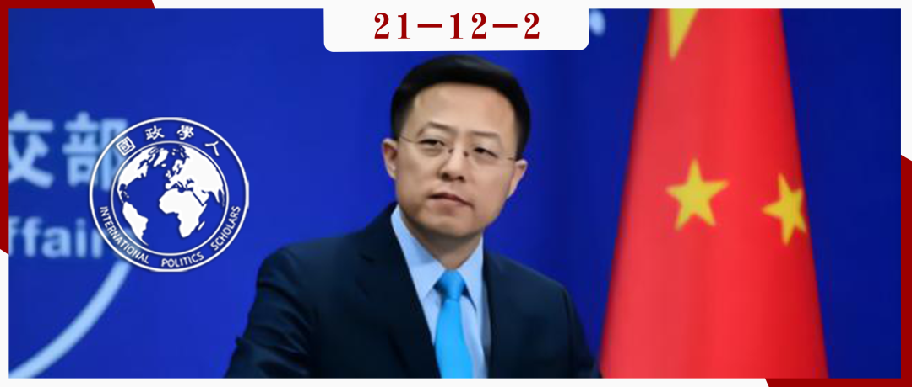
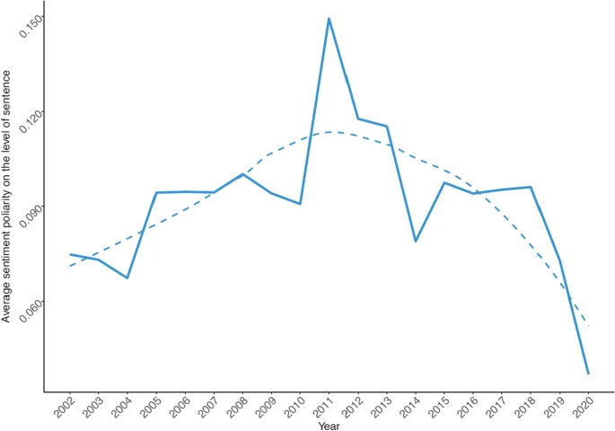
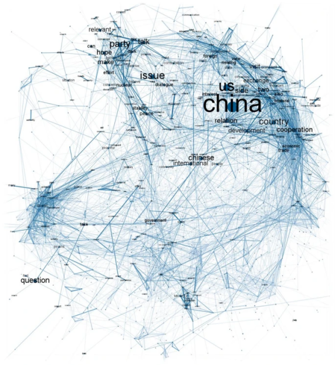
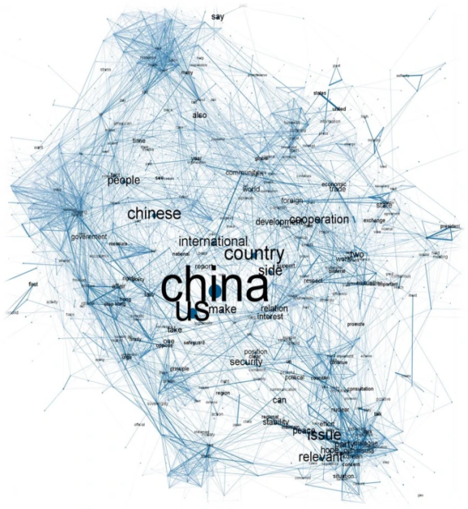
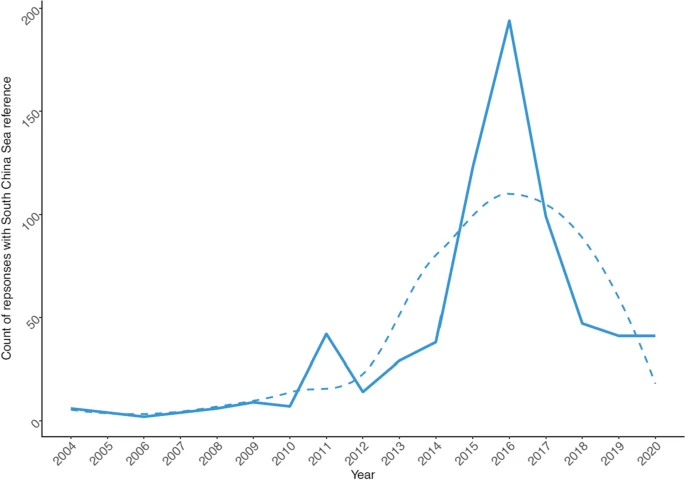

收录于合集 #《国际关系前沿》2021年第12期 22个

作品简介
作者： Michal Mochtak，卢森堡大学政治学研究所博士后研究员，研究领域包括中欧和东欧民主所面临的挑战；Richard Q. Turcsányi，捷克帕拉斯基大学亚洲研究系研究员，研究领域包括中欧与东亚的关系以及中国外交政策。
编译： 姚博闻（国政学人编译员，新加坡国立大学公共政策系）
来源： Mochtak, M., & Turcsanyi, R. Q. (2021). Studying Chinese Foreign Policy Narratives: Introducing the Ministry of Foreign Affairs Press Conferences Corpus. Journal of Chinese Political Science , 1-19.
关键词： 语料库 外交事务 新闻发布会 叙事 中国外交政策
归档： 《国际关系前沿》2021年第12期，总第39期。

内容摘要
本文引入了一个中国外交部新闻发布会的原始语料库。该语料库是有关中国官方立场和外交叙事的一个独特的信息来源，涵盖了中国近20年的外交政策话语，囊括了2002年到2020年间的近23000个可用于分析的问答。本文认为，这一语料库是研究中国外交政策的一个重要成果，它同时兼顾了定性和定量的方法，能够促进基于该语料库的进一步研究。作者通过两个案例研究展示了使用语料库的可能途径：第一，运用定量工具，概括了中国不同时期涉及美国的外交话语；第二，主要运用定性方法，分析了南海争端的相关叙事。
文章导读
01
简介
政治活动离不开形式化叙事语言的使用。尽管其他活动也可以创造政治并定义其复杂的多维结构，但语言的交际作用却至关重要。在这种情景下的叙事能够告诉听众“演讲者是谁（身份）”以及“演讲者想要什么（利益）”，这一点尤其体现在作为国际关系行为体的国家通过建构社会现实，以实现配置“听众”的偏好、身份和社会现实这一目的上。事实上，战略叙事能够在很大程度上改变国际现实。
越来越多的文献表明，叙事在理解中国对外行为方面发挥着至关重要的作用，但能够使我们明确界定叙事如何出现、发展，并最终占据中国外交政策话语中主导地位的综合可靠资源仍然比较稀缺。为解决这一问题，作者引入了中国外交部新闻发布会的原始语料库（corpus），这一语料库涵盖了近20年（2002-2020）来中国的外交话语。中国外交部定期组织新闻发布会以作为中国政府在外交事务上的权威发声。然而，除了被用作轶事证据（anecdotal evidence）外，（中国）外交部发布会上的评论很少被学者们使用。该现象的原因之一可能是，（中国）外交部的网页上只显示最近两年内的发布会全文，而之前的信息很难找到。自2002年起，本文作者就在尝试从（中国）外交部新闻发布会中收集数据，并将它们系统地汇编成一个单一的结构化的语料库。作者认为，这一语料库可以为将来使用定性和定量方法研究中国外交政策做出重要贡献。
02
从“韬光养晦”到“中国自信”
2010年之前的近20年中，中国政府基本上遵循“韬光养晦（“Low Profile” Diplomacy）”原则。然而，二十一世纪第一个十年末尾的各种事件似乎表明，“韬光养晦”的时代将要告一段落。这一点在近年来尤为明显。虽然一开始，中国的坚决态度被（主要是西方国家）认为是同西方格格不入，但这种强硬态度主要是针对中国地缘政治邻国和争端领土，例如南海。然而，随后“中国模因（China- meme）”的影响力扩展到了全球，不仅影响到了核心发达国家，也涉及了周边发展中国家。在这一过程中，在许多领域，中国都被逐渐视为西方领导下国际秩序的主要“挑战者”。
在当下迅速两极化的环境中，和中国相关议题的研究面临着日益政治化的挑战。学者们面对这一新常态的方法是着重研究话语。最近一些研究已经整合了西方对华的叙事的模式，认为一些流行观点的经验基础较为可疑，且可能导致无效的政策回应，甚至造成自我实现（self- fulfilled）的预言。此外，还有一些研究聚焦中国政治话语，尤其是政治口号、中国外交叙事、国际和国内议题的重叠、国家形象的构建等。伴随着近年来中国“一带一路”倡议、新冠肺炎疫情、中国与西方的紧张关系日益加剧等新动态，中国官方话语已逐渐成为学者们研究的热门领域。尽管相关文献越来越多，但通过使用更严格的数据、定量方法，特别是使用计算方法来研究中国外交政策话语的努力则相对较少。
03
外交部发布会语料库的引入
中国外交部定期举办的新闻发布会是一个了解中国政府在国际关系中不同议题立场的独特渠道。这种新闻发布会遵循着西方形式，即记者提问，发言人回应。记者通常会自由提问，并扮演着潜在的议程制定者的角色，中国外交部发言人会为中国外交政策发声，对外公布的文本经过标准化的处理，可能会进行一些省略或调整。因此，语料库中的内容更应被视为中国外交部希望外界听到的内容。不过出于研究中国官方叙事的目的，这种“处理”是完全可以接受的。这些文本是中国战略（策略）叙事的独特来源，被用作吸引、说服、抨击或实现中国更广泛外交目标，与外国行为体进行互动的工具。因此，本文将分析的重点放在受众最广的英文通稿上，并会在将来对中文和其他语言的文本进行同样的分析。
具体方法上，作者根据三个阶段（分别在2018、2019、2020年）从外交部官方网站收集了所有公开可用的新闻发布会文本，并使用R中rvest和RSelenium编译的爬虫程序进行处理。对于更早的文本，作者则借助了互联网档案馆（Internet Archive）运营的Wayback Machine平台。这种情况下，虽不能保证已经获得了外交部公开的所有发布会记录，但从2002年10月起的网页快照密度来看，实际覆盖率已接近100%。
在拥有了原始文本数据之后，作者开发了一系列程序以提取文本中的问答结构，并附上时间标记以及发言人举行新闻发布会的信息。以这种方式创建的原始语料库涵盖了从2002年10月15日到2020年12月31日这段时间，包含了21355个问答。由于记者的问题通常涉及不同的主题，作者决定使用将具有明确多主题特征的问题分割成单独的条目。话题的分布以及中国针对不同国际行为者或议程的话语对于大多数研究是有帮助的。因此，作者采用了一种自动算法来提取问答中的关键词以作为将来查找的标签，这也同时将语料库分成了可以进一步分析的主题。为了证明语料库的有效性，并验证其总体完整性，作者使用两个案例展示了该语料库的应用。
04
案例一：中国对美外交话语的演变
这一案例研究使用了特定的定量工具以探索中国对有关美国的元话语（meta- discourse）的轨迹。几十年来，美国在中国的国际关系中扮演了至关重要的角色。美国一直是“韬光养晦”外交的核心——不论是在中国更专注于经济与合作的过去还是 “中国自信”的现在。研究中国官方外交政策话语如何提及美国是至关重要的，这既是中国外交政策的表达，也是了解中国政府对于其竞争对手自我认知的一种方式。
作者首先提取了那些被提及的关键词并进行分析。这些关键词包括美国国家的代名词（如US、USA、 United States、Washington）及其主要代表（如历任总统和国务卿）。为了突出中国领导层换届带来的叙事差异，作者将子语料库分为2012年11月15日之前和之后。分析首先聚焦于有关美国的回答中情感极性的变化，其次是领导人换届前后一些固定短语的出现。作者总结了每年发布会叙事句子层面上的平均情绪，并将其标准化，从−1（最消极）到1（最积极）。
结果显示，在过去的20年里，中国涉及美国的官方话语的总体情绪大致可以分为两个时代。2012年之前显示出的对美国的情感呈现积极趋势较为温和，并在2011年达到峰值。自那之后，涉及美国的话语情感便持续走低，并在2018年后加速且降到最低点。这些发现与我们回顾过去20年中美关系基本一致。

图 1：中国外交政策话语中对美情绪随时间的变化，其中横轴为年份，纵轴为每年中发布会的“平均情绪”，实线为原始情绪平均值，虚线为大致趋势
04
当涉及到实际的话语时，每个子语料库都分别进行了基于单词搭配的模型的分析。具体来说，作者为1500个最常用单词的两两配对建立了两个模型（即2012年领导人换届之前和之后）。由于罗列出所有配对是不现实的，作者采用网络化的方式。结果如下，两张图都显示了各自的子语料库中出现频率最高的300个单词的配对网络：
 
图 2 ：2012年之前（左）与之后（右）的中美相关话语语义网络
可以看到，在分析的两个时期中，中国对美外交话语发生了明显的变化。2012年之前的话语主要有三个主题：中美双边关系、朝鲜半岛局势和中国台湾地区。2012年后的时期引入了一些新的话题，包括南海和香港问题。 2012年之前，可以看到两国关系以经济合作为中心，只有偶尔的冲突；而在2012年之后，更多的冲突话题出现，创造了一个整体上更具竞争性的关系。 台湾地区、南海和香港等词语附近的网络密集度也表明了中国外交部在考虑美国立场时是如何构建这些问题的——这三个问题都被视为中国的内政，而美国的活动被视为不受欢迎的干涉。这两个模型还表明，从中国的角度来看，这些有关冲突的话题并未在根本上改变中美双边关系，也从未相互关联。尽管这些发现并不至于十分惊人，但它们已经通过提供新的实质性的经验基础，为中美关系的动态变化提供了新的见解。
04
05
案例二：南海争端
为了展示另一种更偏向定性研究的方法，作者分析了2002至2020年间中国官方关于南海争端话语的变化。在有关中国外交政策变化的研究中，这是一个特别的例子，因为它被认为是中国从“韬光养晦”走向“中国自信”的关键。下图显示了外交部新闻发布会中对南海的提及次数随时间的变化。可以注意到，在21世纪初，南海被提及的次数一直较低，直到2011年才出现第一个小高峰。那之后，主要的峰值出现在2016年，当时中国正处于与菲律宾的南海仲裁争端之中。随后这一话题被提及的次数一直高于2011年的第一个小高峰。

图 3 ：外交部新闻发布会涉及南海的回答次数随时间的变化，其中横轴为年份，纵轴为涉及南海的回答数量，实线为原始情绪平均值，虚线为大致趋势。
在语料库中，总共有706个关于南海的问题和答案。到目前为止，讨论最多的声索国（claimant）是菲律宾（181次），远远领先位于第二的越南（41次）。这反映出了中国在南海涉及菲律宾的争端，尤其是在高峰时期，受到了与菲律宾相关事件的影响。而作为一个涵盖了大多数声索国的区域组织，东盟只被提到了22次，这表明它在争端中的参与度相对较低。从外部参与者来看，美国比任何其他参与者提及的次数都要多。这可能会让人们相信，南海争端不仅是地区国家之间的领土争端，而且也是更广泛的中美地缘竞争的场所。其中，较多提及的日本（51次）也是一个相对重要的角色。
在二十一世纪的第一个十年，南海开始出现在讨论中，但大多是在其他国家采取行动之后（主要是越南和菲律宾）。这段时间里中国的回应大致类似，多是表示中国对南海诸岛及其附近海域拥有无可争辩的主权。这些回应大多不是很强硬，中国也明确表示愿意“搁置争议，共同开发”，直到争议最终解决。2009年，中国自身的行动开始被讨论，如增加渔业活动、海上巡逻、军事存在、发展旅游业，或者向联合国提交主权声明。虽然针对周边国家的言论仍保持外交性基调，但发言人也开始强调中国捍卫立场的坚定意志，如“中国政府捍卫南海领土主权和海洋权益的决心是坚定不移的”。然而，当提到美国时，发言人的语气与区域国家相比有很大的不同。美国的主张被称为“完全不准确和不可接受的”，是违反国际法的。这一变化可以被视为“中国自信”的早期迹象。2011年后，关于南海的讨论在数量上显著增加，中国的立场也变得坚定，在一定程度是其他国家采取措施的结果，如菲律宾发起仲裁以及美国和日本的海上巡逻。不过，这一时期的叙事与2012年之前的声明仍有较多连续性，如即使在中国与菲律宾、越南关系紧张时，中国的措辞也强调合作，如中国与菲律宾、越南和其他有关国家在南海问题上的双边沟通渠道一直是畅通和开放的。
谈论其他非声索国时，中国的措辞又有所不同，尤其是在与美国的关系上。美方人员的言论被斥为“不实、不负责任的言论”、“罔顾事实、混淆是非”、“炒作”，而美国本身则被称为 “外部势力”。其他非当事国得到了比美国更好的待遇。尽管如此，日本还是被提醒要“从二战中吸取教训”，澳大利亚则被告知它“不是南海争端的一方”。
从本质上讲，中国向南海争端声索国传达的信息是，不要引入外部力量或多边机构——作为回报，该区域将保持和平与稳定，并且中国将展现积极的合作态度。对于那些非声索国，中国认为它们无权介入南海争端，中国和区域国家有能力维护南海的和平与稳定，任何外部干预只会让问题变得更糟。
06
结论
本文构建了一个反映近20年来中国官方外交政策话语变化的原始语料库，并将其作为中国官方立场和外交叙事的一个独特信息来源。本文同时以中国国际关系中的两个知名领域为例，展示了基于语料库的研究方法（包括定量和定性方法）如何在保持较高可靠性和外部有效性的同时，理解中国的外交立场及其演变。作者希望，这一语料库在将来能够成为学者对中国进行研究的一个标准参考来源。
译者评述
本文作者指出，作为中国外交的权威声音，外交部新闻发布会在与中国外交相关的研究中有着特殊的地位。然而，由于相关信息的不完整，这一渠道未得到学者们的广泛重视。鉴于此，作者通过对公开信息的收集以及使用互联网档案馆等工具，创建了一个中国外交部新闻发布会的原始语料库。为说明这一语料库的作用，作者分别用中国对美外交话语演变和南海争端两个实例，展示了语料库在定量与定性研究中的使用。作者希望这一数据集可以为将来研究中国外交政策提供便利。
本文的一个主要贡献在于通过信息工具对较长一段时间内的外交部新闻发布会通稿进行了整合和分类，以便利将来的研究者。然而，在使用了语料库进行分析后，文中两个实例得出的结论都稍显单薄，更多的是对外交政策大趋势的判断，而这些判断本身通过其它渠道也不难得出。因此，或许将语料库与来自其它途径的信息结合使用可以达到更好的效果，如外交部发言人发表对某一事件的看法时相对侧重哪一方面，相对忽视甚至避免提及哪些因素[1]；中国发言人与其他国家发言人就同一事件的发言有何异同[2][3]；情绪、肢体语言等非语言因素的作用；等等。
参考文献 04
[1] 蓝纯,胡毅.外交部新闻发言人闪避回答的语用分析[J].中国外语,2014,11(06):21-28.
[2] 许静. 中美外交新闻发布会话语中模糊限制语的对比研究—批评性话语分析路径[D].南京师范大学,2017.
[3] 晏梅. 中俄外交部新闻发言人言语行为对比研究[D].北京外国语大学,2013.
词汇整理
语料库 Corpus
轶事证据 **** Anecdotal evidence
韬光养晦 **** Low Profile Diplomacy
中国模因 China-meme
自我实现的 Self-fulfilled
元话语 Meta-discourse
声索国 Claimant
责编 | 董诗 张彦赪
排版 | 黄紫蓝 方引弓
文章观点不代表本平台观点，本平台评译分享的文章均出于专业学习之用, 不以任何盈利为目的，内容主要呈现对原文的介绍，原文内容请通过各高校购买的数据库自行下载。